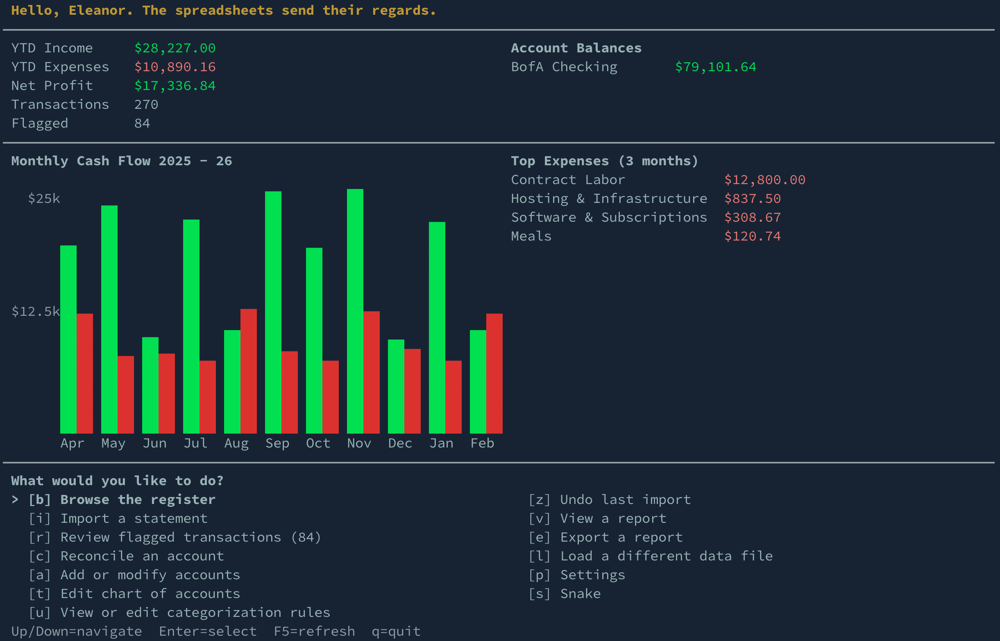

Nigel is a terminal-based bookkeeping tool built for freelancers and small consultancies. Import your bank statements, auto-categorize transactions with simple rules, review flagged transactions, and instantly generate the reports you actually need — P&L, expenses, tax summaries, cash flow.
No cloud. No subscription. No 47-step setup wizard. Just a single password-protected database file, your transactions, and a bloke named Nigel who gets things done.
CSV and XLSX with format auto-detection. Drop your statement in, Nigel figures out the rest.
Pattern-based auto-categorization. Contains, starts_with, regex — with priority ordering. Teach Nigel once, he remembers.
Step through flagged transactions one by one. Assign categories, create rules on the fly. No surprises at tax time.
P&L, expense breakdown, tax summary (Schedule C / 1120-S), cash flow, and cash balance. Export to PDF.
Importers, reports, and exports are all modular. Built-in support for multiple banks, report types, and output formats.
Single SQLite file. No server, no account, no cloud sync. Your books stay on your machine.
SQLCipher database encryption with optional TOTP two-factor authentication. Your financial data is locked down tight.
Everyone needs a break from charts from time to time.
Download a CSV from your bank. Nigel auto-detects the format and imports your transactions.
nigel import statement.csv --account "BofA
Checking"
Most transactions get categorized automatically by your rules. Walk through anything Nigel isn't sure about.
nigel review
P&L, expenses, tax prep, cash flow. Export to PDF when your accountant asks for them.
nigel report pnl --year 2025
Nigel ships with importers, reports, and export formats ready to go. Plus a generic CSV importer for any bank.
Nigel contains no AI features, but every command is fully scriptable via CLI, which means it plays beautifully with AI agents and automation tools.
The repo includes Claude Code skills for adding new importers and intelligently creating categorization rules from your statements. With a tool like Claude Cowork, point it at a CSV and say:
No dependencies, download a native binary for your platform: